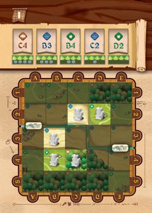
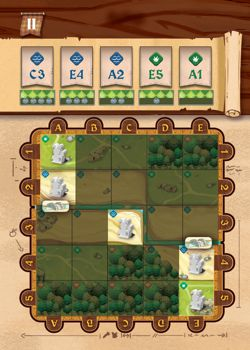
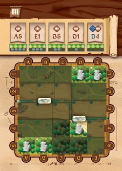
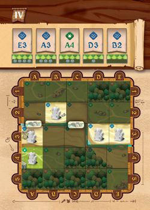
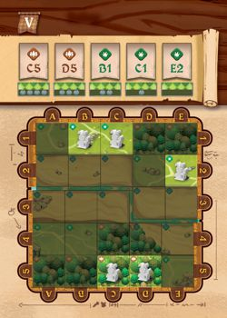
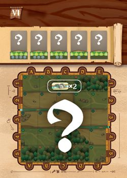

Bunny Kingdom: Town
Board Game Arena 官方规则文档
The lists in these rules are displayed incorrectly when viewed on a BGA game page.
To read a correctly formatted version, you must open the wiki rules page in a new tab. (To help fix these rules, see this guide for advice.)Overview and Aim of the Game
Bunny Kingdom: Town is a tile-drafting and placement game played over 4 rounds.
During each round, you'll be planning and constructing new Buildings to develop the Neighborhoods under your control.
Choose your construction plans carefully to boost your strategy, but watch out: those you overlook could be just what your opponent needs!
Each new Building you construct will bring you resources or increase your influence. Don't forget to satisfy the requests of your new townsfolk, which will remain secret until the end of the game and could completely change the outcome.
During final scoring, the player with the most Golden Carrots is the winner!
Setup
At the start of the game, Upgrade Tiles are randomly drawn until the total cost totals 8 or more.
Each player starts the game with 2 Coins.
The initial bridges and plot cards are set up based on the game's chosen Setup Card.
Setup Cards
When setting up a game, you can choose a Setup Card (or select a random one). These determine which plots are initially available (the spaces where you can build your building) and where the game's bridges will be placed.
| Card | Choose For | Plots and Bridges |
|---|---|---|
| 1: A Golden Opportunity | First game |  Starting Plots and Bridges |
| 2: New arrivals | A game with spread-out plots |  Starting Plots and Bridges |
| 3: At the forest's edge | A high-wood game |  Starting Plots and Bridges |
| 4: By the water | Initial plots along the river |  Starting Plots and Bridges |
| 5: On the other side of the river | A game with no bridges |  Starting Plots (no Bridges) |
| 6: Beyond the horizon | A random setup |  Starting Plots are randomly drawn. Players place 1 Bridge each. |
The round
A game of Bunny Kingdom: Town is played over 4 rounds, with each player taking turns being the first player.
Each round consists of a series of player turns, continuing until all available Building tiles have been taken.
Preparing a new round
At the start of each new round, complete the following steps.
- Each player receives 2 Coins from the reserve. (You received 3 during setup, so you'll start the first round with 5.)
- Reveal the first 5 tiles from the Building pile and place them on the designated spaces on the board. These are the Buildings you can construct during this round.
- Each player draws 2 Request cards and chooses 1 which they place face down in front of them. Place the unchosen cards into the discard pile face-up.
You can now begin the round.
The turn
Each player will now play their turn, starting with the first player. On your turn, you must perform the Plan action. You may then, if you wish, Construct one or more Buildings. Before or after either of these two actions, you may also Create one or more Upgrades.
Plan (mandatory)
This action allows you to obtain new Building tiles. On your turn, you must perform the Plan action. To do so, choose an available Building tile from the track and place it into your reserve. Do not reveal a new Building tile to replace the one you took!
Construct (optional)
This action lets you construct Buildings from your reserve to develop the town and your Neighborhoods.
Placing a Building
Once you have completed your Plan action, you may, if you wish, construct one or more Buildings. To construct a Building, complete the following steps:
- Choose a Building tile from your reserve.
- Choose an available Plot card and immediately pay its cost in Coins as shown on the board, depending on its position on the track. Then add it to your reserve.
- Place your Building tile onto the space shown on the Plot card (as indicated by the presence of an Architect token). Place the Architect token above the Plot card’s track space. Place a Bunny from your reserve onto the Building you constructed. If the space contains a wood token, add it to your reserve.
The first card on the track is free — you can take that Plot without paying any Coins.
Some Buildings must be placed onto waterfront spaces (as shown by the waterfront icon). If there are no available waterfront Plots (or if they're too expensive), you cannot construct those Buildings. All other Buildings have no placement restrictions.
If you cannot or do not wish to construct a Building, skip this step and keep the Buildings in your reserve for a future turn.
If you constructed a Building, move on to Activating a Neighborhood. Otherwise, go straight to End of the turn.
Activating a Neighborhood
Activating a Neighborhood lets you collect resources and increase your influence by gaining precious Golden Carrots. Each time you construct a Building, apply any When Constructed effects it has, then calculate your Neighborhood's influence.
- Neighborhood
- A group of orthogonally adjacent Buildings under your control is called a Neighborhood. Buildings on different sides of the river are not part of the same Neighborhood, unless they are connected by a Bridge token.
Building triggers
Each Building has either a When Constructed or a When Activated effect which triggers at a specific moment when activating a Neighborhood.
- When Constructed
- These Buildings have a one-off effect that is triggered only when they are first placed onto a Plot. They do not reactivate multiple times during the game, unless they return to your reserve and are placed again later.
- When Activated
- When a Neighborhood is activated, all of its Buildings’ effects are triggered at once.
Calculating the influence of a Neighborhood
After constructing a Building and applying its When Constructed effect, calculate the influence of the Neighborhood it was added to:
Multiply the number of active stars on the Buildings in the Neighborhood by the number of different Building types (which are not Illegal ) present in that Neighborhood. The total obtained represents the number of Golden Carrots you gain for that Neighborhood. Move your Bunny forward that number of spaces on the score track.
- Stars
- Stars represent a Building's prestige and the wealth it brings to its Neighborhood. Some Stars only count towards a Neighborhood's influence if the Neighborhood contains at least one Building of the type shown. If it doesn't, then the Star isn't active (and isn't counted).
- Building Types
- Buildings have different types. The more different types of Building a Neighborhood has (giving it a variety of different shops and services), the more influential it will be. There are 5 different Building types that contribute to a Neighborhood's influence:
- Leisure
- Work
- Civic
- Residential
- Knowledge
- Illegal Buildings do not contribute to influence.
- The Park
- The Park is a joker tile. It can be counted as any Building type. You can choose its type each time you calculate its Neighborhood's influence. Certain Request cards may also require you to choose its type at the end of the game; in that case, you can only choose its type once.
Constructing additional Buildings
As long as you have Buildings in your reserve, you can keep placing them during the Construct phase. Each additional Building you place costs costs 1 extra Coin in addition to the cost of the Plot. Other than this additional cost, proceed as normal to construct it. New Plot cards will be revealed at the end of the turn only.
Keeping Buildings in reserve for later can often be a good idea. A better location may become available, or a certain Plot may become less expensive. It’s up to you to choose the best strategy to optimize the development of your Neighborhoods!
Create (optional)
Upgrades bring you additional bonuses that make it easier to develop your Neighborhoods.
At any time during your turn, before or after your Plan or Construct actions, you can create as many Upgrades as you wish by spending Wood. All spent Wood is put back into the reserve. To create an Upgrade, complete the following steps
- Choose 1 available Upgrade tile.
- Pay its cost in Wood.
- Place it onto one of the 3 slots on your side of the board.
You have 3 Upgrade slots. Once you have created 3, you cannot buy any more. Make sure you choose carefully, as each Upgrade can have considerable impact on your strategy. The Upgrades revealed during setup will be the only ones available for the entire game.
- When purchased Upgrades: apply the effect immediately.
- All the time Upgrades: apply the effect whenever it's possible.
End of the turn
At the end of your turn, complete the following steps:
- Slide the Plot cards along: slide all the Plot cards on the track, reducing each card's cost.
- Reveal new Plot cards: fill the empty spaces on the track with new cards from the pile. Use Architect tokens to indicate the new Plots available on the board.
Check whether the End of the round has been triggered. If it hasn’t, then it’s now your opponent’s turn.
End of the round
If you take the last available Building tile from the board, the end of the round is triggered. End your turn as normal, then check the pile of Building tiles:
- If the pile of Building tiles is not empty, prepare a new round.
- If the pile of Building tiles pile is empty, and you have just finished the 4th round, go to End of the game.
End of the game
At the end of the game, complete the following steps:
- Reveal your Request cards: Starting with the player in the lowest position on the score track, reveal your Request cards one by one and check if your meet their scoring conditions.
- Determine the winner: The player with the most Golden Carrots wins and becomes the mayor of the new town! In the case of a draw, the player with the most coins wins. If the draw persists, the two players share their victory!
Note: apply the effects of the Community Leader and Watchmaker Request cards at end of game, not when you first obtain them.
Credits
- Design: Richard Garfield
- Illustrations: Jiahui Eva Gao
- Project management: Adrien Fenouillet
- Graphic Design: Charlie Metz
- Proofreading: Xavier Taverne, Robin Leplumey
- Editorial assistant: Camille Cherchour
- 3D visuals: Valentin Jacoberger
- Translation: Georgina Fenouillet
Published by IELLO — 9, avenue des Érables, lot 341, 54180 Heillecourt, France · iello.fr · contact@iello.fr